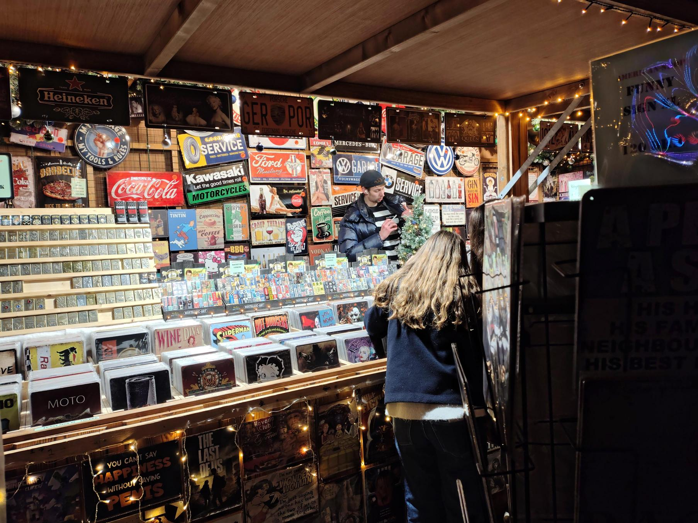
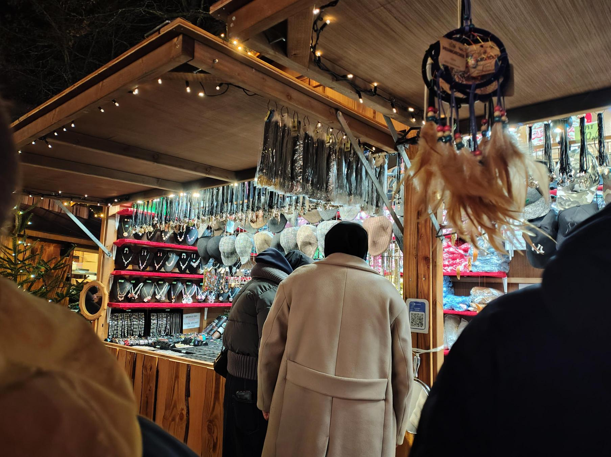

America Shop
Noget for enhver smag! Drevet af Tjalling og hans søn sælger America shop Emaljeskilte, tags, kruds og meget meget mere
Brink Nordic
I år finder du Brink Nordic i deres hytte på det midterste repos. De sælger unikt glaspynt. Hvert stykke glaspynt er designet i Danmark og individuelt mundblæst og hånddekoreret af dygtige håndværkere i Europa. Den håndværksmæssige proces gør at hvert stykke glaspynt er helt unik. Deres glaspynt er inspireret af både stifterens bedstemors antikke julepynt og de nordiske traditioner.
Casa Jada
NYHED på Aalborg Julemarked - Casa Jada Casa Jada finder du på nederste repos med lækre, spanske delikatesser, smukt keramik og lækkert gløgg Mangler du ting til en lækker tapas? Måske et nyt julestel? Eller en indbydende gavekurv? Et glas gløgg at varme dig på? Så skal du forbi Casa Jadas hytte! Mette er selv med til at udvikle motiverne på det smukke keramik, og de er selv med til at udvikle en masse af de spændende delikatesser, du kan finde i sortimentet

Julesweaters
Jule-Sweaters ApS er en af Europas største julesweaterbrands. Virksomheden har et GOTS Certifikat, der er en af de højeste tekstilanmærkninger indenfor Bæredygtighed. I denne hytte på det midterste repos finder du et stort udvalg af julesweaters, juleskjorter, pyjamas, sokker mm. De har håndplukket nogle af deres favorit designs, som du kan finde i deres hytte - kig forbi og find din favorit.
Kunsthåndværk
Kunsthåndværk finder du på midterste repos. Hytten drives af syv selvstændige kunsthåndværkere. Her bliver der solgt kvalitets julepynt og gaver i alle prisklasser. Det man kan være helt sikker på er, at alt er “Made in Denmark” og formet i hænderne på de syv kunsthåndværkere. Her finder du både keramik, smykker, glas og pileflet.

Spunky
Spunky kan du finde på nederste repos. Han har et stort udvalg af smykker, hatte og lædervarer.
